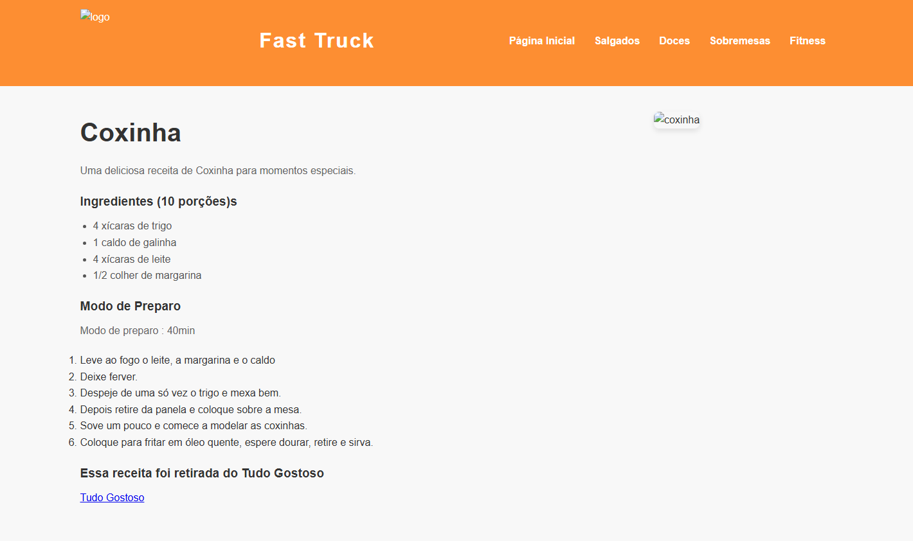

Olá, eu sou Lucas Mateus
Desenvolvedor / Estudante de TI
Sou apaixonado por tecnologia e desenvolvimento web, engenharia de software. Sei Utilizar HTML, CSS, JavaScript, Python, Noqsl, SQL e AWS
Busco meu primeiro estágio na área de Tecnologia da Informação.
Certificações
AWS Cloud Practitioner 12hrs
Alura - mongodb NoSQL 48hrs
Oracle - fundações de banco de dados Mysql 91hrs
Projetos
Projetos feitos e tecnologias Utilizadas, codigos no github
Estoque de mouse

Sobre,Ferramentas Utilizadas
interrface grafica biblioteca tkinter , customtkinter, python, mysql, banco feito junto com o codigo python
com login para Admin, depois de feito arrumei para uma loja que pediram (loja de graficas e estampas e venda de canecas personalizadas)
pagina de Culinaria
Sobre,Ferramentas Utilizadas
Projeto básico, com Html, css,Js, ao lado das receitas tem as imagens do que sera preparado, e tendo logo bem centralizada na esquerda superior
Estes são alguns dos meus projetos. Mais virão mais em breve!
embusca de novas oportunidades para adquirir conhecimentos
Sobre mim
Sou estudante de Tecnologia da Informação, em busca da minha primeira oportunidade de estágio na área de TI, com foco em desenvolvimento de software e evolução profissional. Tenho interesse em atuar em ambientes corporativos que valorizem boas práticas, inovação tecnológica e desenvolvimento contínuo de talentos.
Possuo conhecimentos em HTML, CSS e JavaScript, além de familiaridade com serviços em nuvem (AWS) e fundamentos de bancos de dados. Tenho perfil analítico, organizado e orientado a resultados, com facilidade para absorver novos conhecimentos e aplicar soluções de forma eficiente.
Sou um profissional dedicado, proativo e comprometido, com facilidade para aprender novas tecnologias e contribuir de forma responsável para o desenvolvimento de soluções eficientes e escaláveis.
Atualmente, busco uma oportunidade para aplicar meus conhecimentos, adquirir experiência prática e evoluir profissionalmente dentro da área de tecnologia.